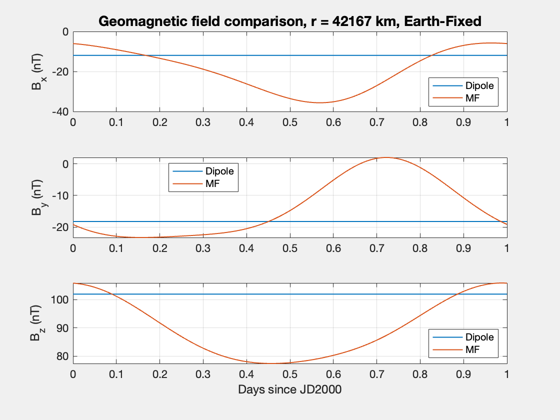

Compare the dipole model to the MF model
"dipole" model is the tilted dipole model from BDipole.m or BDipolePlanet.m "MF" model is the Mead-Fairfield from BMF.m
------------------------------------------------------------------------ See also: BDipole, BDipolePlanet, BMF ------------------------------------------------------------------------
%-------------------------------------------------------------------------- % Copyright (c) 2020 Princeton Satellite Systems, Inc. % All rights reserved. % Since 2021.1 %-------------------------------------------------------------------------- % Set the Julean Date vector, 1 day in January 2000 jD = JD2000 + linspace(0,1); % Set the position vector (Earth-fixed so that Dipole field is constant) rad = 42167; % GEO %rad = 7000; % LEO %rad = 20180; % GPS r = [rad 0 0]; rVec = repmat(r',size(jD)); % Convert from Earth-fixed to Earth-Centered Inertial for k = 1:size(rVec,2) M = ECIToEF(JD2T(jD(k))); rVec(:,k) = M'*rVec(:,k); end % Compute the B vector using dipole model and MF model bDip = BDipole(rVec,jD); bMF = BMF(rVec,jD,3); % Convert from Earth-Centerd Inertial to Earth-Fixed for k = 1:size(rVec,2) M = ECIToEF(JD2T(jD(k))); bDip(:,k) = M*bDip(:,k); bMF(:,k) = M*bMF(:,k); end title = sprintf('Geomagnetic field comparison, r = %d km, Earth-Fixed',rad); Plot2D(jD-JD2000,[bDip;bMF]*1e9,'Days since JD2000',{'B_x (nT)',... 'B_y (nT)','B_z (nT)'},title,[],{'[1 4]',... '[2 5]','[3 6]'},[],[],[],[],{{'Dipole','MF'},{'Dipole','MF'},... {'Dipole','MF'}}) %-------------------------------------- % PSS internal file version information %-------------------------------------- % $Id: 4d83f444ff40158eb84a6b3bd02ebe1a8f12604c $